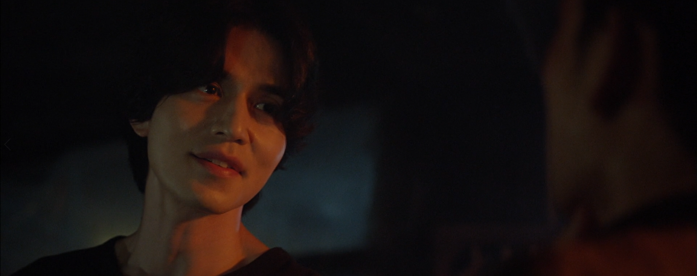

once it started raining
a young guy went to visit his friend
he stood at the bus stop about 15 minutes
на улице было очень серо
наконец мальчик сел в маленький автобус
друг должен был ждать его на площади, пока автобус не приедет
once it started raining
Credits: 星の破線 - DOVA-SYNDROME; @Cygames, Inc.